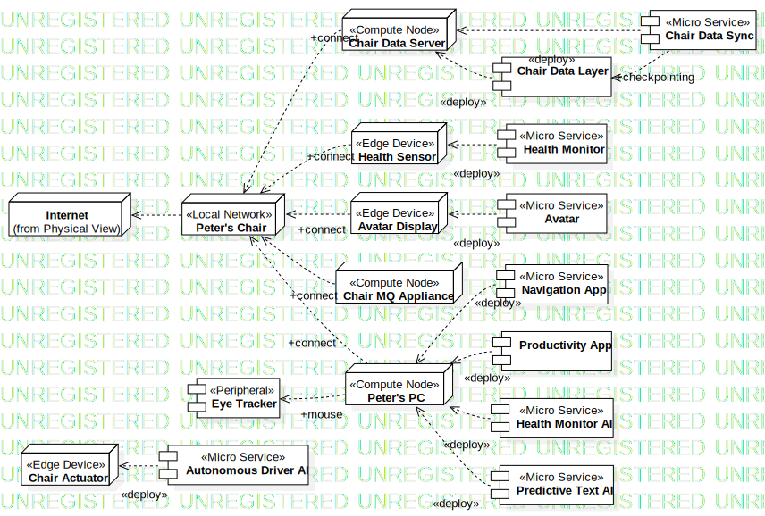
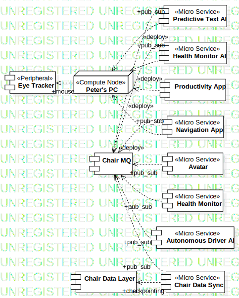

Peter's Chair
UMLPackage
Untitled
::
Physical View
::
Peter's Chair
Description
none
Diagrams

Peter's Chair Deployment

Peter's Chair Integration
Properties
Name
Value
name
Peter's Chair
stereotype
null
visibility
public
importedElements
Owned Elements
Chair MQ
«Micro Service»Avatar
«Micro Service»Predictive Text AI
«Micro Service»Health Monitor
«Micro Service»Health Monitor AI
Productivity App
«Peripheral»Eye Tracker
«Micro Service»Autonomous Driver AI
«Micro Service»Navigation App
Chair Data Layer
«Micro Service»Chair Data Sync
«Local Network»Peter's Chair
«Compute Node»Peter's PC
«Compute Node»Chair MQ Appliance
«Edge Device»Avatar Display
«Edge Device»Health Sensor
«Edge Device»Chair Actuator
«Compute Node»Chair Data Server
Peter's Chair Deployment
Peter's Chair Integration